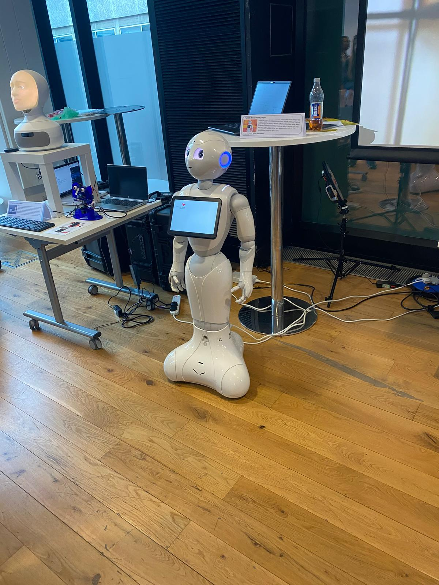
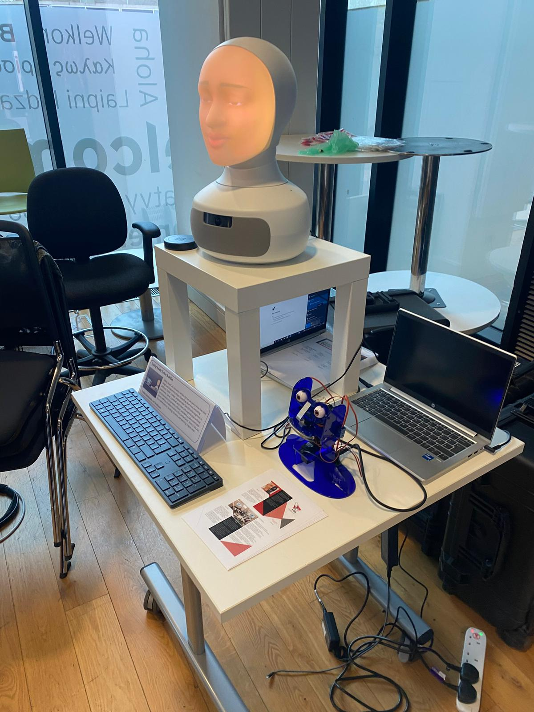
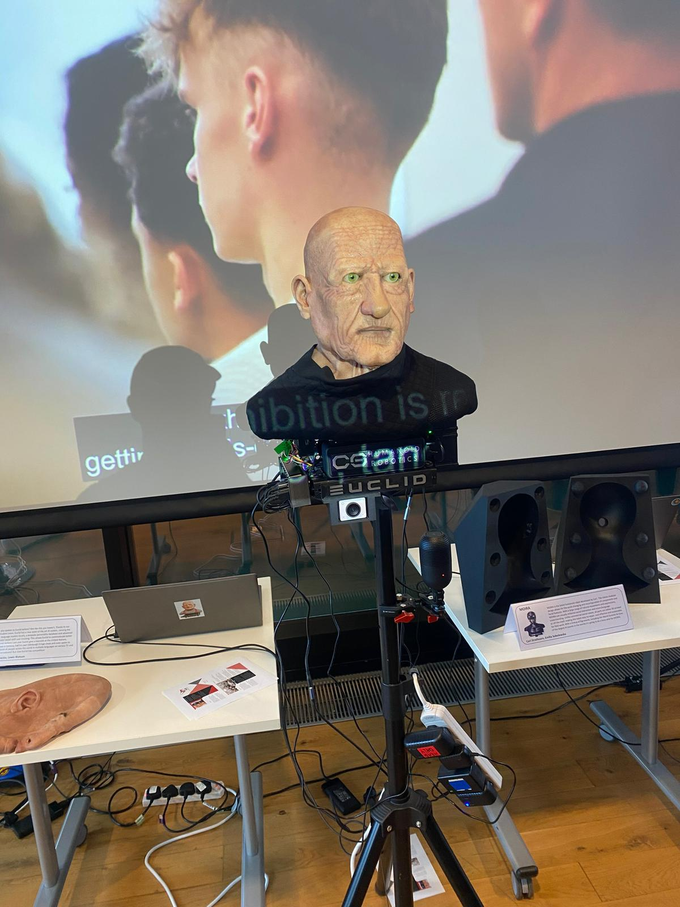
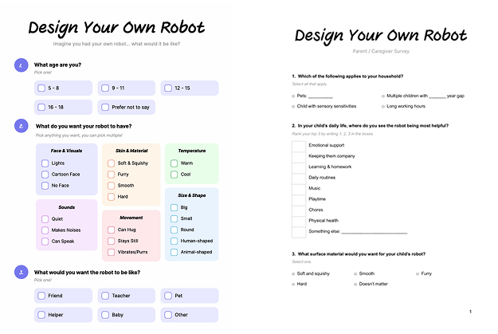

What children imagine
Would a robot feel more like a friend, a pet, a playful character or a useful helper — and would that change with age?
Human–Robot Interaction / UX Research
What should a robot for children actually be? I helped turn an open-ended concept into a research question, gathering and analysing children's and parents' perspectives to inform its future direction.

Exploratory human–robot interaction research
Children aged 5–18 and their parents/caregivers
44 child responses · 29 parent/caregiver responses
Research planning, questionnaire design, fieldwork and data synthesis
The starting point was a companion robot for everyday childhood: something that might encourage play, offer a physical form of interaction and fit into family life alongside — rather than in place of — other people and activities. We were interested in how children might relate to a robot that could move, respond and communicate.
But the role of that robot was not settled. Would children imagine a pet, friend or helper? Would parents value the same things? Before narrowing its design, we needed evidence from the people who might actually use it and decide whether it belonged at home.
The intended audience was children generally, not a therapeutic or specialist intervention for children with learning difficulties. We considered a broad 5–18 age range, while recognising that children's needs and expectations can differ substantially across those years.


A children's robot would need to appeal to its primary users while also being acceptable to the adults responsible for it. Early discussions raised questions about physical form, companionship, communication and everyday practicality. The challenge for the research was to explore those questions without treating our initial ideas as settled requirements.
Would a robot feel more like a friend, a pet, a playful character or a useful helper — and would that change with age?
How much should the robot help with learning or routines, and what would make it practical and manageable at home?
Should interaction rely on touch and movement, speech and sound, or a combination chosen by children themselves?
The wider concept explored physical interaction and the possibility of understanding emotional cues through touch, pressure and movement. That was an interesting research direction, but it did not tell us which interactions people would want. My contribution centred on asking those questions first and translating participants' preferences into a clearer brief for further work.
We explored the role children wanted the robot to play; its appearance, materials and tactile qualities; how it should communicate and react; and the practical features and boundaries parents considered important. We also wanted to see where child and adult views aligned — and where broad averages concealed different expectations.
Our central question: what would make a children's robot appealing to children, useful to families and acceptable in the home?
Our early literature review and project discussions suggested several possible directions. Rather than presenting these as confirmed design features, we used them to shape what we needed to ask children and parents. This helped make the survey an exploration of expectations, not a vote on a predetermined robot.
Explore whether children picture a friend, pet, baby, teacher or helper rather than assuming one social role.
Look for variation across age bands instead of treating 5–18-year-olds as a single group.
Separate desired behaviours, such as hugging, from assumptions about soft or hard materials.
Test interest in speech, sound, lights, expressions and movement rather than privileging non-verbal cues.
Ask parents about durability, cleaning, volume and predictable movement alongside children's preferences.
Make space for parental views on involvement, unwanted features and broader concerns about connected technology.
We ran an exploratory, in-person survey at Scotland's largest robotics convention. The setting gave us access to children and accompanying adults who could engage with the concept, although it also meant our sample was self-selecting and likely more interested in robotics than the wider public.
Across 29 family groups, the spreadsheet records 44 children and 29 parents/caregivers. The child responses were 22 aged 5–8, 17 aged 9–11 and five aged 12–15. Although the wider study targeted ages 5–18, no 16–18-year-old responses appear in this dataset.
We used separate child and parent/caregiver questionnaires so children's imagined experiences would not be replaced by adult assumptions about usefulness, safety or buying decisions.
We reduced the number and complexity of questions across a wide age range, using concrete choices about robot role, appearance, sounds and touch. The child survey also used a drawing-based ideal-robot activity to give children room to express ideas beyond fixed answers.
The three-page parent survey asked adults to rank useful applications and physical priorities, select preferred interaction methods and parental involvement, and write down unwanted features or additional concerns. This captured both structured preferences and open-ended feedback.
We organised survey responses in Excel, compared age groups and parent–child expectations, and examined response-level overlaps such as material preference versus hugging. We treated patterns and correlation checks as exploratory, not proof of causation or statistical significance.
The useful findings were not simply the most popular individual answers. Several patterns complicated our early ideas — particularly differences by age, the meaning of touch, and the importance of speech. Those contradictions helped refine the research-led direction.
11 of 22 children aged 5–8 selected “Friend”, while 8 of 17 aged 9–11 selected “Helper”. The 12–15 group had only five responses, so its patterns remain tentative.
27 of 44 children wanted a robot they could hug, yet 23 chose a hard exterior — and 11 chose both. Physical interaction could not be inferred from materials alone.
32 of 44 children (73%) selected a speaking robot. Our early emphasis on quiet, non-verbal interaction needed reconsidering rather than being treated as a settled requirement.
Parents put practical value first. In the 29 recorded parent responses, 21 chose learning and homework as a useful application, 17 chose playtime, 22 prioritised durability, 21 wanted volume control and 19 valued ease of cleaning. Parents were also closely divided between being very involved (11) and somewhat involved (12) in their child's interactions. The original summary percentages used a base of 28; these figures are recalculated from the 29 raw parent records.
We also looked beyond the totals. For example, 20 of the 26 children who selected “Warm” also selected “Can Hug”, compared with 7 of the 18 children who selected “Cool”. This was a suggestive association in a small survey, not evidence that adding warmth would cause children to hug a robot.
The strongest insight was a mismatch of priorities: children described the experience they wanted; parents also assessed the usefulness, upkeep and control of a robot living in their home.

The original three-page parent questionnaire asked about daily use, materials, touch responses, emotional cues and the degree of parental involvement. Its final open-text questions helped capture concerns that predefined checkboxes could miss, including privacy, data use, control and the risks of over-reliance on connected technologies.
Research limitation: this was a convenience sample recruited at a robotics event, with a small older-child subgroup and no recorded 16–18-year-olds. These findings are useful for forming hypotheses and product priorities, but are not representative of all children or a validated test of a finished robot.
The outcome of this phase was a stronger evidence base for subsequent concept and prototype decisions — not a claim that I built, tested or finalised a robot. The findings suggest exploring age-sensitive roles, supporting speech alongside physical feedback, and treating durability, cleaning and volume control as central rather than secondary considerations.
We also learned not to force a simple choice between a soft companion and a hard assistant. Children could want to hug a robot with a hard exterior, and parents might favour learning features even while children picture an emotional or playful relationship. Those tensions should inform prototypes and further testing, rather than be smoothed away in a single universal design.